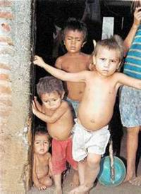

<html>
<head>
<title>Ricardo Cabrera - Control de la natalidad</title>
<meta http-equiv="Content-Type" content="text/html; charset=UTF-8">
<META content="cromanon, cromañon, cromagnon, bengalas, ricardo cabrera, ricuti" name=keywords>
<link rel="stylesheet" href="../Tonterias/win_ie.css"></head>
</html>
<html>
<head>
</head>

<body bgcolor="#FFFFFF" text="#000000" alink="#000000" leftmargin="0" topmargin="0" marginwidth="0" marginheight="0">
<table width="600" height="444" border="0" align=center cellpadding="0" cellspacing="0"> 
  <tr bgcolor="#000000" align="right"> 
<td width="56" align="left" valign="top"><a href="superpoblacion.html"></a></td>
<td width="546"></td>
  </tr> <tr bgcolor="#BB0000" valign="middle" align="left"> 
<td height="20" colspan="2" class="bodytext"> <table width="100%" border="0" cellspacing="0" cellpadding="0"> 
<tr align="center" class="menuitem"> <td width="96" nowrap>&nbsp;<b><a href="../index.html" class="menuitem">home</a></b>&nbsp;</td><td width="10" nowrap><font color="#000000">|</font></td>
<td colspan="2" nowrap>&nbsp;<SPAN CLASS="menuitem"><b CLASS="menuitem"><a href="../lista_tonterias.html" class="menuitem">ver 
otras tonter&iacute;as</a></b></SPAN></td>
<td width="10" nowrap><font color="#000000">|</font></td>
<td colspan="4" nowrap><a href="../lista_notas.html" class="menuitem"><strong>ver notas period&iacute;sticas</strong></a> </td>
<td width="4" nowrap><font color="#000000">|</font></td>
<td colspan="5" nowrap><b><a href="../gestion_u.html" class="menuitem">temas universidad </a></b></td>
<td width="4" nowrap><font color="#000000">|</font></td><td width="46" nowrap>&nbsp;<b><a href="mailto: ricuti@qi.fcen.uba.ar" class="menuitem">@</a></b>&nbsp;</td>
</tr> 
</table></td></tr> <tr> <td height="9" colspan="2" class="bodytext"></td>
</tr> 
<tr align="center"> <td height="334" colspan="2"> <table width="600" height="314" border="0" cellpadding="0" cellspacing="0"> 
<tr class="bodytext"> <td valign="top" width="590" height="314"> 
<table width="602" height="314" border="0" cellpadding="0" cellspacing="0"> 
  <tr> 
 <td width="206" height="278" align="center" valign="top" class="bodytext">
   <table width="100%" border="0">
  <tr>
    <td>&nbsp;</td>
  </tr>
  <tr>
    <td>&nbsp;</td>
  </tr>
  <tr>
    <td class="epigrafe"><span id="result_box"><span title="La Iglesia Cat&oacute;lica se opone   sistem&aacute;ticamente a todo plan de control de la natalidad, paternidad   responsable, educaci&oacute;n sexual, etc." onMouseOver="this.style.backgroundColor='#ebeff9'" onMouseOut="this.style.backgroundColor='#fff'">The Roman Catholic Church would bitterly oppose any government's policy be it on birth control or responsible parenthood, sex education or whatever. It's quite clear to me that the gamble paid off.</span><span title="Me queda claro cu&aacute;l es su r&eacute;dito." onMouseOver="this.style.backgroundColor='#ebeff9'" onMouseOut="this.style.backgroundColor='#fff'"></span></span></td>
  </tr>
  <tr>
    <td>&nbsp;</td>
  </tr>
  <tr>
    <td class="epigrafe"></td>
  </tr>
  <tr>
    <td class="epigrafe">&nbsp;</td>
  </tr>
  <tr>
    <td>&nbsp;</td>
  </tr>
</table> </td><td WIDTH="396" colspan="2" align="right" valign="top" class="bodytext"> 
<table width="100%" height="531" border="0">
  <tr>
    <td height="486" class="bodytext"><p><b><font color="#3F6386">Silly things</font></b><br>
      <strong class="titulograndegris">Belittlers</strong></p>
      <p>I guess it must be the silliest thing ever, as it is easy to see that   nobody cares. Anyway, let me kick off with something crazy: some people   say that raising large families helps shelter their members from   poverty, as they firmly -and without a shadow of a doubt- believe that   the more children they have, the greater the chance that at least one of   them will stand head and shoulders above the rest,   and in such a successful way that he will even manage to   overcome everyone's financial difficulties. Were I not feeling so sad   about this, it would actually make me roar with laughter. <br>
</p>
      Of course I am pointing out that   silly, small thing: overpopulation.   I'll   go even further though you'll sure have already heard about it. They   say (these damn foolish know-it-alls say) that in Europe people are   oooverly concerned about their aging population... more and more graying   people, less and less of the younger ones. If I don't burst out   laughing it is just because I am filled with an overwhelming sense of   outrage. <br>
      <br>
      I could go on and on scrolling through even more trash but... Let's   check it out: I defy anyone to pick out whatever environmental issue and   say if, in short, overpopulation has finally not been its likely cause.   It's so hard for me to believe that there are people who still cannot   realize that the space is finite. And that the rest of the world&rsquo;s   resources such as food, water or power sources are also finite... and   that every inhabitant wants to get his quota. This equation is so very   simple that I feel ashamed of them when it seems as though they do not   understand; what is more, I get outraged at their belittling.<br>
      <br>
      Not controlling third   world countries birth rate by government mandate leads to poverty,   famine and people's unhappiness... and helps kill the planet. Those who   spread the word to end the world, I formally accuse you of geocide.
      <p><b><font color="#3F6386"><br>
      </font></b></p></td>
  </tr>
  <tr>
    <td height="28" align="center" bgcolor="#CCCCCC"><table width="95%" height="26" border="0">
      <tr>
        <td height="22" class="epigrafe"><p><span title="Se   permite su reproducci&oacute;n citando la fuente.">Some Rights Reserved.</span> No reproduction in any   form is authorized unless fully attributed<span title="Ultima   actualizaci&oacute;n jun-07.">. Last updated June-07. </span>Buenos Aires, Argentina.</p></td>
      </tr>
    </table></td>
  </tr>
</table>
</td>
  </tr>  


 <tr> <td height="18" COLSPAN="3" class="bodytext">&nbsp;</td></tr> <tr> 
<td height="18" colspan="3" class="bodytext">&nbsp;</td></tr> 
</table></td></tr> </table>
</td></tr> 
<tr> <td height="10" colspan="2" class="bodytext"></td>
</tr> 
</table>
</body>
</html>

